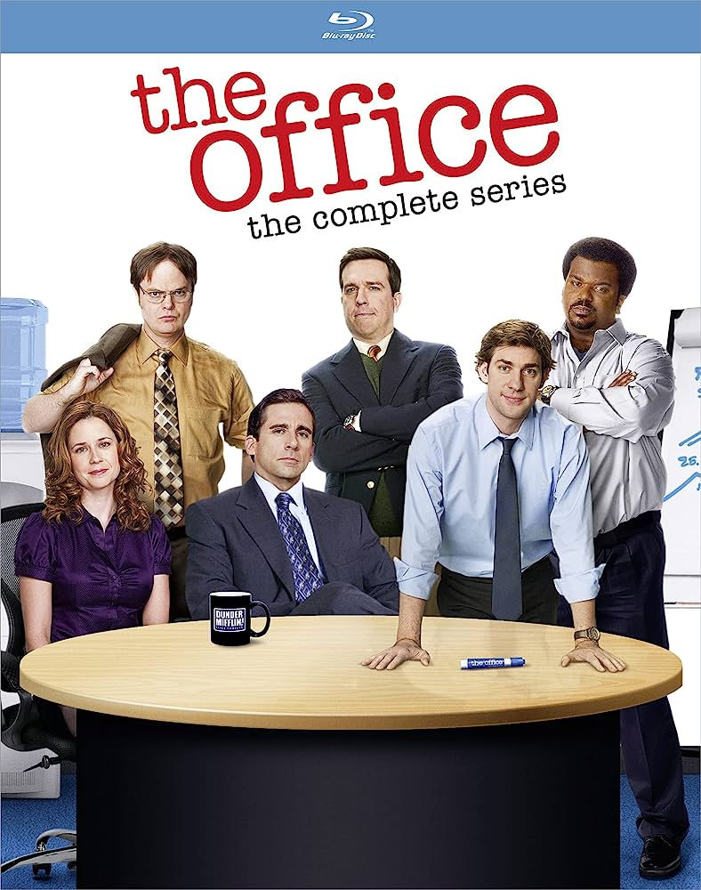

The Office
More Information
See this movie on IMDbSummary:
"The Office" is a mockumentary-style sitcom that originally aired in the United States from 2005 to 2013. The show is based on the British series of the same name created by Ricky Gervais and Stephen Merchant.
Set in the Scranton, Pennsylvania branch of the Dunder Mifflin paper company, "The Office" follows the daily lives of the employees, capturing the mundane and often hilarious aspects of office work through interviews and documentary-style filming.
The series centers around the bumbling but well-meaning regional manager, Michael Scott, played by Steve Carell, and his interactions with his quirky and diverse group of employees, including Jim, Pam, Dwight, and others. The show delves into their relationships, romantic entanglements, pranks, and workplace dynamics.
"The Office" is celebrated for its witty humor, memorable characters, and its ability to portray relatable and absurd situations in an office environment. The show's unique format, standout performances, and iconic catchphrases have made it a cult classic and a beloved comedy series.